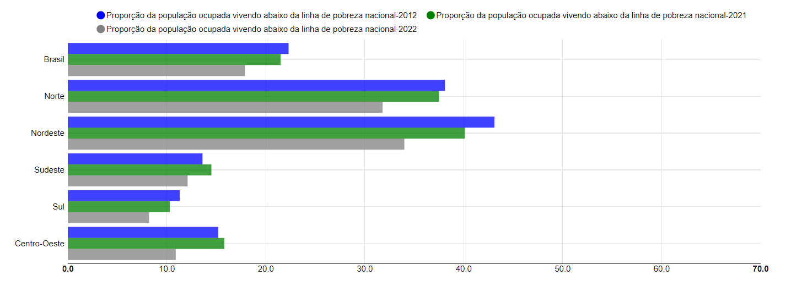
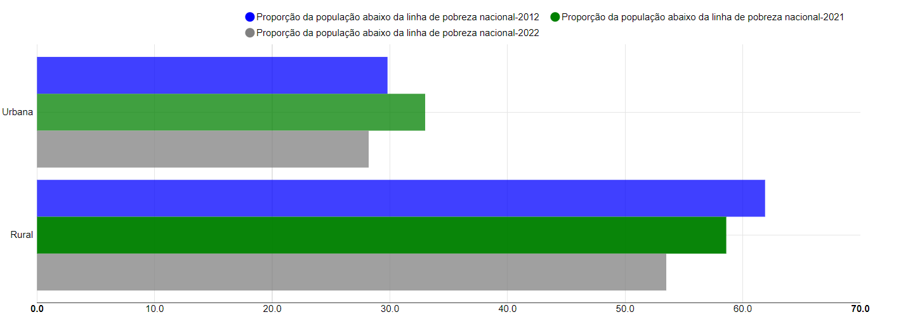
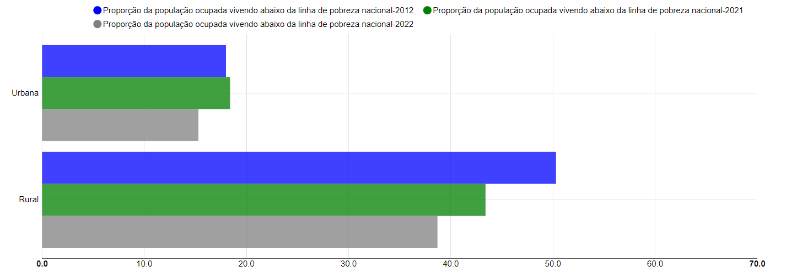
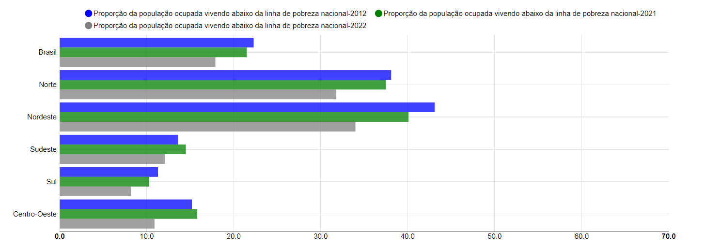
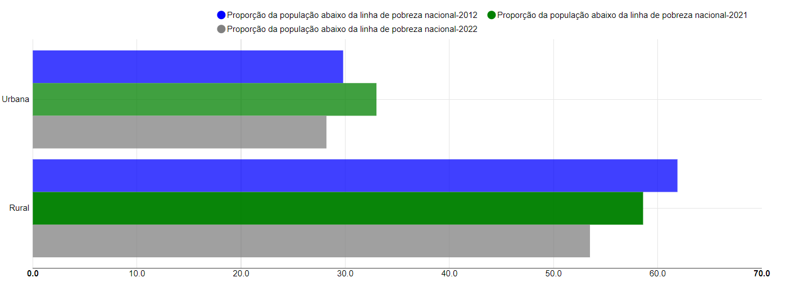
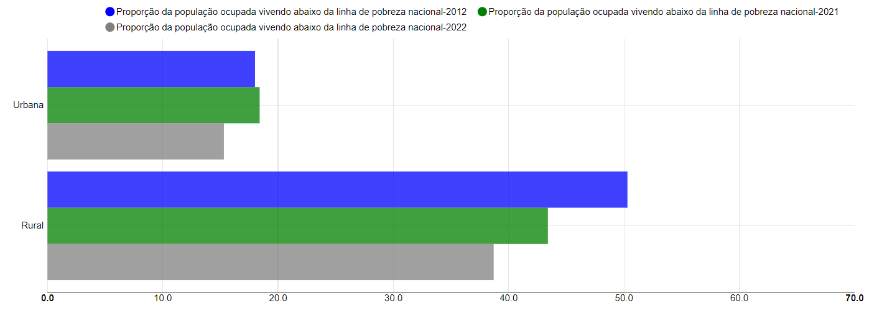

Indicador 1.2.1
Proporção da população vivendo abaixo da linha de pobreza nacional, por sexo, idade, condição perante trabalho e localização geográfica (urbano/rural)
Meta: Até 2030, reduzir pelo menos à metade a proporção de homens, mulheres e crianças, de todas as idades, que vivem na pobreza, em todas as suas dimensões, de acordo com as definições nacionais
 





Voltar